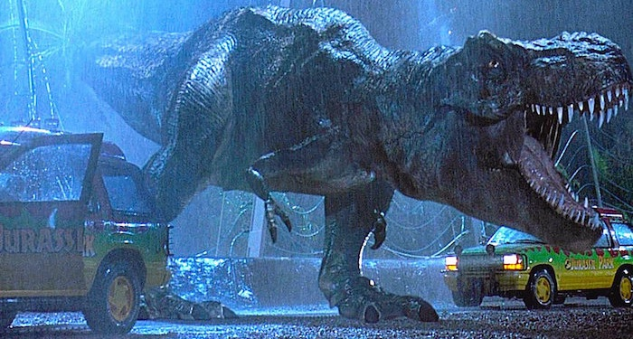

Jurassic Park
Plot Synopsis
The story begins on Isla Nublar, a small island 120 miles off the coast of Costa Rica. A large group of construction workers and animal handlers offload a large container, the creature within unseen. During the process, the animal attempts to escape, an act which leads to a mass panic, and the death of one of the workers.
The story jumps forward to an Amber mine in the Dominican Republic, where we learn that miners extracting amber are involved with a genetic-engineering company called InGen. We also learn that the death of the worker seen earlier has raised serious concerns about the safety of the island, according to Donald Gennaro, an InGen representative, and that the owner of the island is now seeking top scientific experts in the field to help endorse the park. While he speaks to the man in charge of the mine, Juanito, his crew finds a large chunk of amber with a preserved mosquito inside.
At a paleontological excavation in Montana we are introduced to Dr. Alan Grant, and his assistant Ellie Sattler, as they slowly uncover the fossilized remains of a Velociraptor, perhaps nature's most lethal and cunning predator to date, a beautiful specimen evolved to kill. Part of Grant's research experiments with a new radiological device that shoots a probe into the dirt which bounces an image of an uncovered raptor skeleton back to a computer screen.
Grant is hesitant about the new technology but seems fascinated with the image it produces without having to dig. He is also a follower of a long-held theory among paleontologists that dinosaurs evolved more from birds than reptiles. One of his assistants has brought along his son, who scoffs at the image on the screen, unimpressed with the fact that it looks like a dead turkey. Grant tells the kid a story about how velociraptors would hunt their prey with fast coordinated attacks. The boy is horrified when Grant explains that after their prey is brought down, velociraptors would often eat their prey alive.
The dig is cut short by the sudden appearance of Grant and Sattler's main sponsor, the elderly and eccentric billionaire, John Hammond. He invites them over to endorse his latest project, a remote island resort, where he claims that their "unique biological attractions" are "guaranteed to drive children out their minds!" Alan and Ellie are reluctant to leave their dig but Hammond entices them by offering to fund their work for three more years. Grant and Sattler are accompanied by two other characters -- the equally eccentric chaos theorist Dr. Ian Malcolm, and the lawyer, Donald Gennaro, who represents Hammond's investors.
As they arrive by helicopter, they are treated to a unique spectacle of living, breathing dinosaurs. Just the sight of these mighty beasts, a towering Brachiosaurus accompanied by a herd of Parasaurolophus, is enough to leave the stunned visitors breathless, save for Gennaro's offhand comment: "we're gonna make a fortune off this place...".
Later, as they arrive at the island's central resort and control facility, the visitors are given a brief tour of the process that created the animals. InGen has succeeded in cloning animals from simple strands of DNA salvaged from mosquitoes that fed on dinosaur blood, and were preserved for millions of years inside fossilized amber. The group is shown the egg-incubation room, just in time to witness the birth of a baby Velociraptor, a sight that deeply disturbs Grant. He asks to see where the adults are housed.
The special containment facility seen in the introduction, a fortress of electrified fences and dense foliage, all that separates the humans from the most dangerous creature on the island. Grant is witness to the daily feeding of the animals: a cow is lowered into the pit, only to be stripped clean within moments. The visitors (and the audience) is spared the gruesome sight of the carnage by a thick covering of jungle foliage...
The group prepares to experience the theme park's central attraction, in which visitors embark on a safari-like tour of the park, on special electrified Ford Explorers. Grant, Sattler, Malcolm and Gennaro are accompanied by Hammond's two grand children: Lex and her little brother Tim. As the group heads off, Hammond settles into the main control room where his two computer experts, Arnold and Nedry, manage the complex infrastructure of the park.
The tour is largely un-eventful: the Tyrannosaurus Rex and Dilophosaurus -two extremely dangerous carnivores- refuse to reveal themselves to the eager tourists. A sick triceratops is also encountered, tended to by the park veterinarians, whom Sattler leaves the group to help out with. An approaching tropical storm forces the tour to be cut short, as most of the staff leave by ship for the mainland.
In the meantime, we learn the true colors of Nedry - he has been hired to steal dinosaur embryos for InGen's rival corporation, BioSyn. In order to steal the embryos, he shuts down security systems throughout the park, but this also causes the tour's electric cars to break down, and the electrified fences shut down, thus releasing the dinosaurs from containment.
In the film's most thrilling sequence, a T-Rex escapes its enclosure and proceeds to wreck the tour vehicles. Gennaro is eaten, Malcolm is critically injured, but Grant manages to escape with the terrified children. In the meantime, a lost and confused Nedry, trying to hand over the stolen embryos to his contact, encounters a venom-spitting Dilophosaurus, and justice is dealt.
Sattler and the Park Warden Muldoon arrive in a jeep at the site of the T-Rex attack to find the injured Malcolm and the remains of Gennarro, but everyone else has disappeared. The T-Rex returns to give chase to the jeep down the road in an exciting car chase of an action sequence, but the humans eventually manage to escape.
Grant and the kids spend the night sheltering up a tree, and wake up to find a Brachiosaurus grazing nearby. Lex is initially frightened, but Grant reassures her (and the audience) that Brachiosaurs are peaceful herbivores, and that dinosaurs aren't monsters, they're just animals. Once more, we are given the opportunity to appreciate the beauty and majesty of these magnificent creatures.
With Malcolm injured and park systems still offline, Arnold is forced to take drastic action and reset the system-an act that has the unintended consequences of freeing the vicious velociraptors from their enclosure. Arnold, Muldoon and Sattler attempt to restore power, only to have Arnold and Muldoon outsmarted and killed by the cunning creatures. Only Sattler manages to narrowly avoid getting killed.
After witnessing a stampede of ostrich-like dinosaurs known as Gallimimus, Grant and the kids make it back to the main resort complex, only to find it abandoned. Grant leaves the kids in the main dining area, and tries to search for other survivors. In the meantime, Lex and Tim are cornered by a pair of raptors inside the main kitchen. In one of the most terrifying scenes in the entire film, the raptors stalk through the dark kitchen, searching for the kids. Eventually, Lex and Tim manage to lure one of the raptors into the freezer and lock it in, but the other raptor chases them out of the kitchen.
Meeting up in the control room, Grant, Sattler, and the kids attempt to restore power and communications to the park, but are trapped in by the same raptor. In the nick of time, the security systems and phone lines are brought back online. Nevertheless, the raptors manage to break into the control room and gives chase to our heroes throughout the entire building.
Eventually, our heroes are cornered by the last two raptors inside the main atrium. Just as all hope is lost, the T-Rex come crashing in and attacks the raptors, buying enough time for the small group of humans to escape.
As the humans evacuate the island by helicopter, the T-Rex gives a final victory roar behind a falling banner proclaiming: "When Dinosaurs Ruled the Earth". The ending scene is quite powerful and epic, and perfectly captures the spirit of the film in portraying dinosaurs as some of the most magnificent creatures to ever walk the Earth...